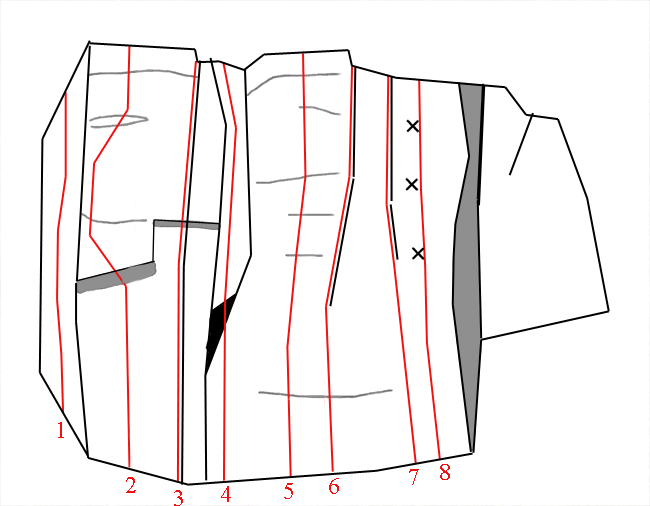
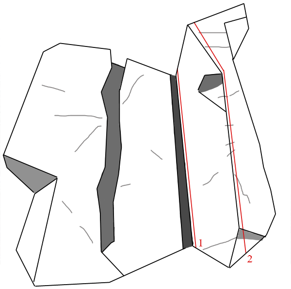
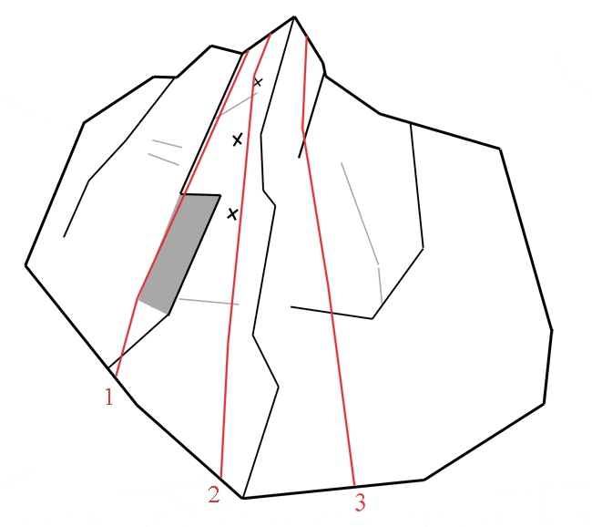
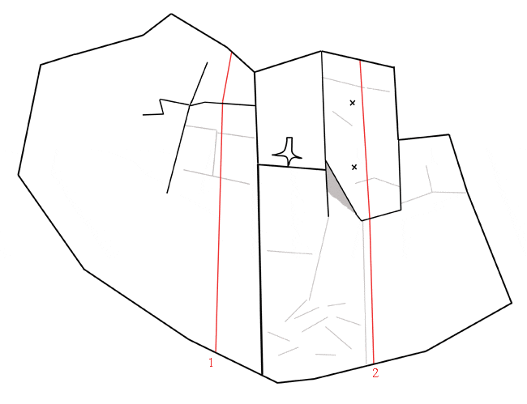
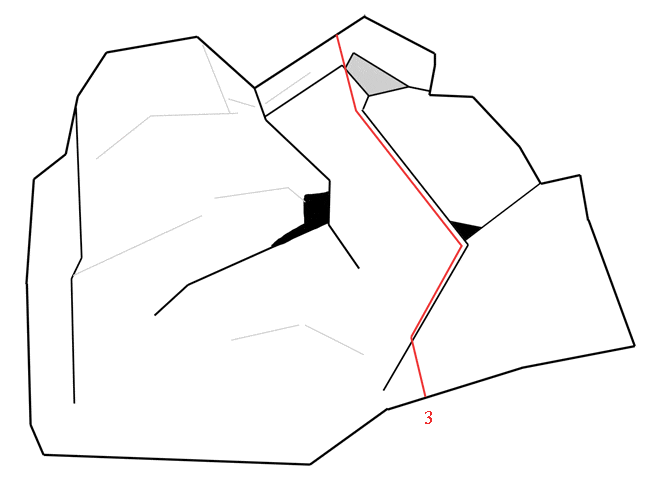
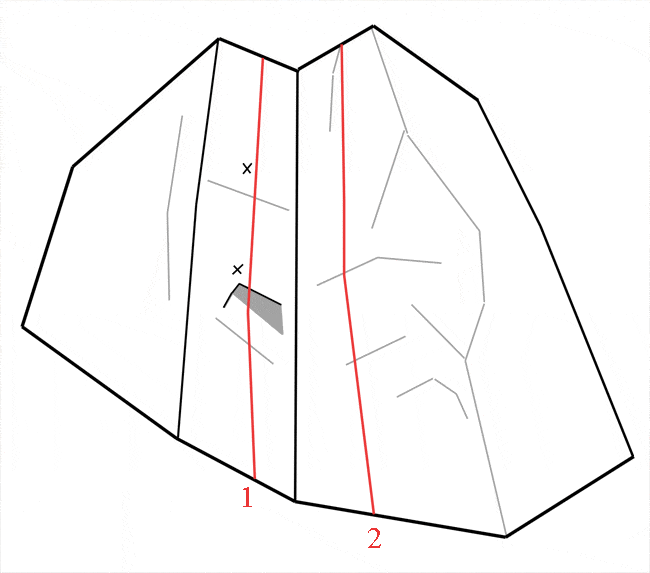

Lat: 56.04716402350692 Long: 13.1396484375
[[Bild:SnuveLÅG004.jpg|400 px|thumb|Mathias Sjöberg lägger en friend på
Foto:
Fredrik Rapp
]]
Kattuggla eller Berguv har siktats vid/i C-väggen, precis i en håla på mitten av "ormus bunkus". På våren under fågelns häckningsperiod (april-maj) kan det vara känsligt.
B-,C- & D-väggarna var alla mer eller mindre igenväxta och i princip oanvändbara vid ett besök den 25 Juli 2009. Här behövs en ordentlig uppröjning.
Snuvestuan består av en samling väggar som ligger inne i ett skogsområde, mellan Stenestad och Klåveröd, uppe på söderåsen i Skåne. Klättringen här är av lite mer trad-betonad karaktär, då de allra flesta lederna säkras med egna bitar. Området bjuder idag på 16 leder ifrån 5- till 6+, men möjlighet för fler turer finns. Höjden varierar från 6 till 13 meter. Klippan är grovkornig och på någon av lederna lite smulig, men bjuder på bra friktion. Området består av 5 mindre väggar döpta som A-E, A väggen är den första du kommer till och orienterandet till de övriga väggarna utgår därifrån (förutom E-väggen). Själva "Snuvestuan" är en liten grotta som ligger under ett uppbrutet klipparti mellan A och B-väggarna. Enligt sägnen ska den elaka "skogssnuvan" bo i grottan, om du får syn på henne är det viktigt att vända jackan utochin och kepsen bakochfram, mer info om det finns på skyltarna vid parkeringen.
Från Malmö:
Ta E6an mot Göteborg. Vid avfart Lomma tar du sedan väg 103 mot Lund som senare övergår i väg 108 mot Kävlinge. Kör mot Röstånga genom Teckomatorp och vidare mot Svalöv. I Svalöv följer du sedan skyltningen mot Kågeröd. Kör vidare mot Stenestad rakt genom Kågeröd, men ta höger mot Klåveröd innan du når Stenestad (ca 6 km efter kågeröd). Följ sedan vägen ca 2 kilometer. Ta vänster in på den tydliga grusvägen efter en liten rastplats, denna väg är skyltad Vargadalen(obs skylten är liten och av trä så titta noga). Sen är det bara att följa grusvägen till du når en tydlig parkering. Följ sen en markerad stig mot Snuvestuan.
Från Göteborg:
Ta av från E6 vid Strövelstorp en mil norr om Helsingborg och sväng vänster mot Bjuv. När du når väg 110 svänger du vänster. Kör förbi Bjuv och ta vänster mot Kågeröd på väg 109 när du når Billesholm. I Kågeröd ta vänster mot Stenestad. Ta höger mot Klåveröd innan du når Stenestad (ca 6 km efter kågeröd). Följ sedan vägen ca 2 kilometer. Ta vänster in på den tydliga grusvägen efter en liten rastplats, denna väg är skyltad Vargadalen(obs skylten är liten och av trä så titta noga). Sen är det bara att följa grusvägen till du når en tydlig parkering. Följ sen en markerad stig mot Snuvestuan.
Torbjörn Winther utvecklade lederna vid vägg A tillsammans med Ralph Meima 1994. Men sen föll väggpartiet i glömska för att inte få speciellt många besök förrän 1999, då nytursutvecklingen åter tog fart. Denna gång var det Ola Knutsson och Fredrik Rapp som stod för ledmakandet. Flera nya väggar upptäcktes och utvecklades.
Detta är den första och kanske mest karakteristiska väggen som du kommer till. För alla leder här bygger man enkelt ett ankare i träden på toppen.
[[Bild:SnuveLÅG005.jpg|frame|A-väggen i snuvestuan en sommarkväll.
Foto:
Fredrik Rapp
]]
Om du fortsätter i förlängning av A-väggen passerar du en eldstad och själva snuvestuan, snart syns B-väggen till höger.
Om du vrider 90 grader vänster när du står vid eldstaden och går ca. 150 meter in i skogen, först över en liten kulle sen ner i en blöt sänka som du följer till vänster så befinner du dig strax vid C-väggen.
Hör ihop med föregående vägg, och ligger bara ett stenkast längre bort från denna
Vänstra delen
Högra delen
För att komma till E- väggen fortsätter du en liten bit till på grusvägen, förbi en vägbom och sedan nerför en backe. När backen tar slut och en liten bäck rinner under vägen så ser du klippan tydligt precis till vänster om vägen.
Vänstra delen
Kategori:trad
Kategori:mix
Kategori:Skåne
Copyright (C) Permission is granted to copy, distribute and/or modify this document under the terms of the GNU Free Documentation License, Version 1.3